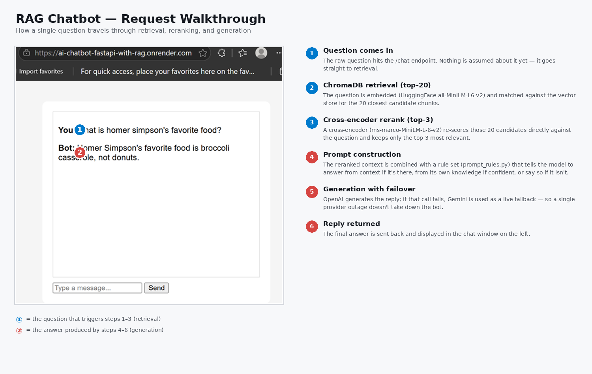
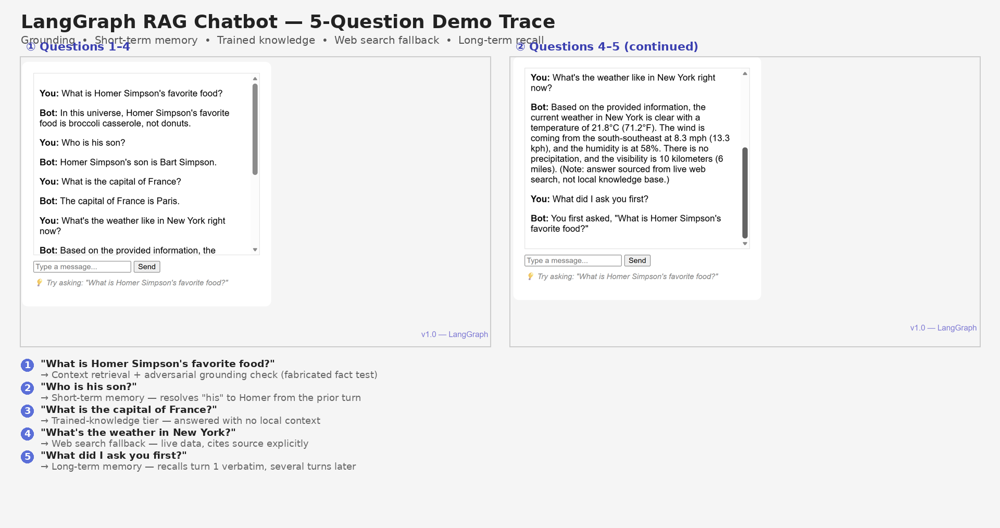
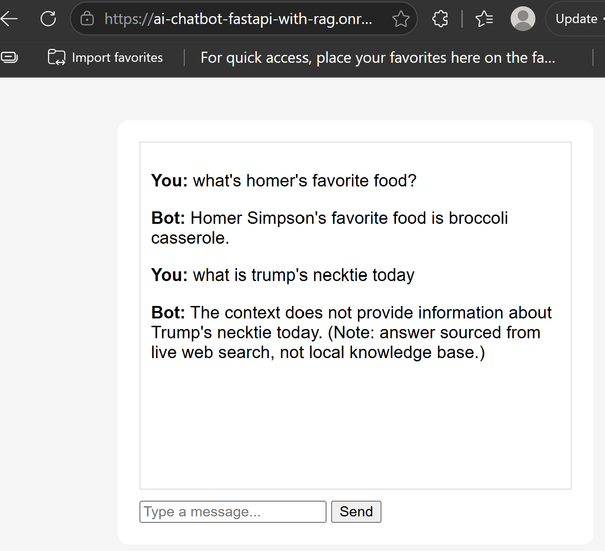

GenAI, LLM & Data Science
Application Engineer
Bridging 10+ years of software engineering rigor with stateful RAG agents, LangGraph orchestration, vector databases, and predictive data science pipelines.
Core Focus Areas
- LangGraph & RAG: Stateful multi-node LLM workflows & hybrid search
- Data Science: Predictive modeling, time-series, scikit-learn & pandas
- Backend & Ops: FastAPI, Docker, Cloud Run, MCP Servers & Observability
Background & Discipline
About Cindy Hsu
I am a **GenAI / LLM Application Engineer & Data Science Engineer** based in Orange County, CA. With a Master of Science in Computer Science from the **University of Southern California (USC)** and over 10 years of software engineering background spanning mobile development and rigorous Quality Assurance engineering, I bring a unique combination of algorithmic depth and software reliability to AI systems.
My recent engineering work focuses on architecting production-ready AI applications. I leverage **LangGraph** for stateful graph orchestration, build hybrid Retrieval-Augmented Generation (RAG) pipelines utilizing **ChromaDB/FAISS** and HuggingFace Cross-Encoders, and deploy high-performance microservices with **FastAPI**, **Docker**, and **Google Cloud Run**.
Having spent years maintaining software quality and test coverage, I approach LLM engineering with a strong emphasis on observability, automated testing (pytest, LangSmith), modularity (MCP protocol), and robust error boundaries.
Education
Master of Science in Computer Science
University of Southern California (USC)
Location
Orange County, CA (Open to local & remote opportunities)
Capabilities
Technical Expertise
Comprehensive stack spanning modern AI frameworks, classical ML, and cloud infrastructure.
GenAI & LLM Systems
Stateful agents & graph orchestration
RAG & Retrieval
Hybrid search & reranking architectures
Data Science & ML
Predictive analytics & modeling
Backend & Deployment
Production REST services & containers
Observability & QA
Traceability & test automation
Software Engineering
Solid architecture & mobile roots
Featured Portfolio
Engineering Projects
Showcasing stateful LLM graph agents, predictive time-series data pipelines, and custom Model Context Protocol (MCP) tool integration.
AI Chatbot with RAG - LangGraph Edition
An enterprise-grade, stateful RAG chatbot utilizing **LangGraph** for cyclic execution flow and decision routing, integrated with **ChromaDB** vector storage and deployed across **Google Cloud Run** and **Render**. Supports dynamic document ingestion, cross-encoder reranking, and full tracing via LangSmith.
Architecture & Live Demos






Disneyland Wait-Time Analysis & Prediction Pipeline
Engineered end-to-end Python data processing pipelines analyzing historical park visitor trends, weather variables, and seasonality. Built predictive ML models using **scikit-learn** to forecast wait times across popular attractions, enabling data-driven operational decision making.
MCP Server: Simpsons Cities
Custom **Model Context Protocol (MCP)** server enabling AI desktop applications (like Claude Desktop) to invoke specialized domain tools for Springfield geographic data, demographic information, and fictional city metrics. Validated with **MCP Inspector** for protocol compliance and structured schema handling.
Career Journey
Professional Experience
GenAI & Data Science Application Engineer
2025 – PresentIndependent / Project Portfolio Development • Orange County, CA
- Architected stateful multi-agent RAG systems using LangGraph, ChromaDB, and FastAPI deployed on Cloud Run.
- Built end-to-end data analytics and predictive ML pipelines for time-series forecasting.
- Implemented custom MCP servers to seamlessly connect local LLMs with specialized external data tools.
Senior iOS & Software Engineer
10+ Years ExperienceSoftware Development & Mobile Systems
- Engineered robust mobile application architectures and feature modules for high-volume client deployments.
- Led client-side memory optimizations, network caching, and RESTful API integrations.
- Collaborated with cross-functional design and backend teams to ensure scalable code architecture.
Software QA Engineer
Software DisciplineQuality Engineering & Automation
- Designed automated regression test suites, preventing high-severity defects prior to production releases.
- Established rigid QA standards, edge-case testing, and reliable error boundary validation.
Let's Connect
Get In Touch
I am currently exploring opportunities in **GenAI Engineering**, **LLM Application Architecture**, and **Data Science Engineering** in Orange County, CA, or remote positions.